Android TV · Android · Windows · macOS
Toute votre télé, dans une seule application.
Ultra TV est un lecteur IPTV natif, pensé pour la télécommande : chaînes, films, séries, guide des programmes, replay et pause du direct. Il se règle tout seul selon votre appareil et votre réseau.
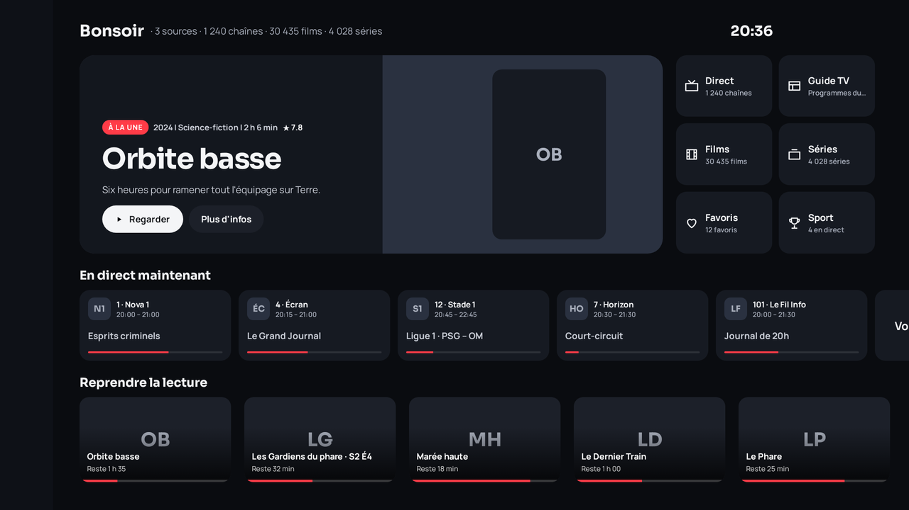
Ce que fait Ultra TV
Direct fluide, même avec des dizaines de milliers de chaînes
Liste des chaînes en feuille latérale pendant la lecture (onglets Chaînes et Favoris), surcouche avec chaînes récentes, programme en cours et ruban de la soirée. Catégories actives, filtre par langue dès la première source, badges de qualité, zapping par numéro, recherche instantanée, et Recherche depuis n'importe quel écran (bouton en haut du menu latéral, touches Recherche et micro de la télécommande).
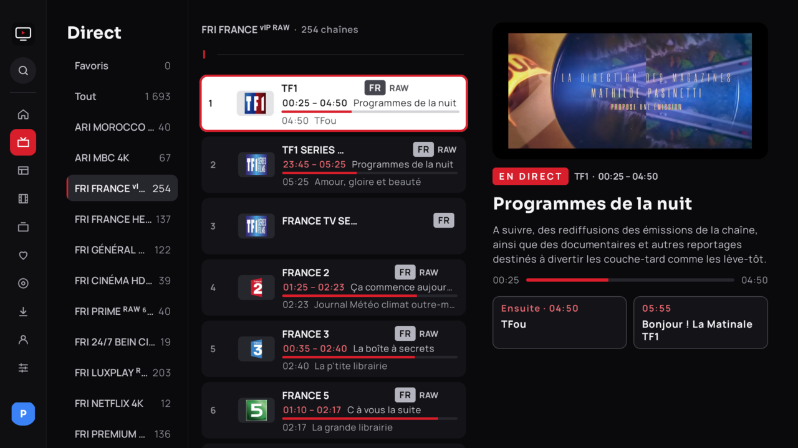
Guide, replay et rappels
Grille horaire filtrable par catégorie de chaînes, aperçu de la chaîne, replay depuis le guide quand la source le permet, rappels et enregistrements programmés, pause du direct par tampon disque.
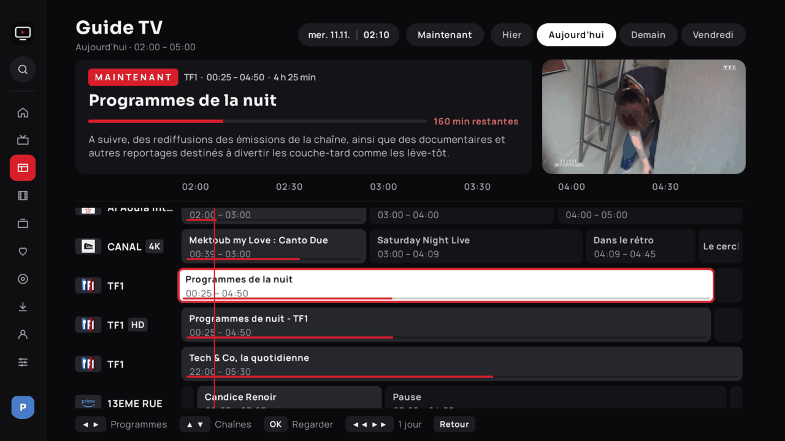
Fiches riches, sous-titres, profils
Affiches, synopsis, distribution et bandes-annonces via TMDB, logos officiels des titres et fonds HD via Fanart.tv, prochain épisode des séries via TVmaze, notes IMDb et Rotten Tomatoes, « Passer l'intro », sous-titres en ligne et style réglable, profils dont un profil Enfants, intégration Google TV (Watch Next, recherche vocale).
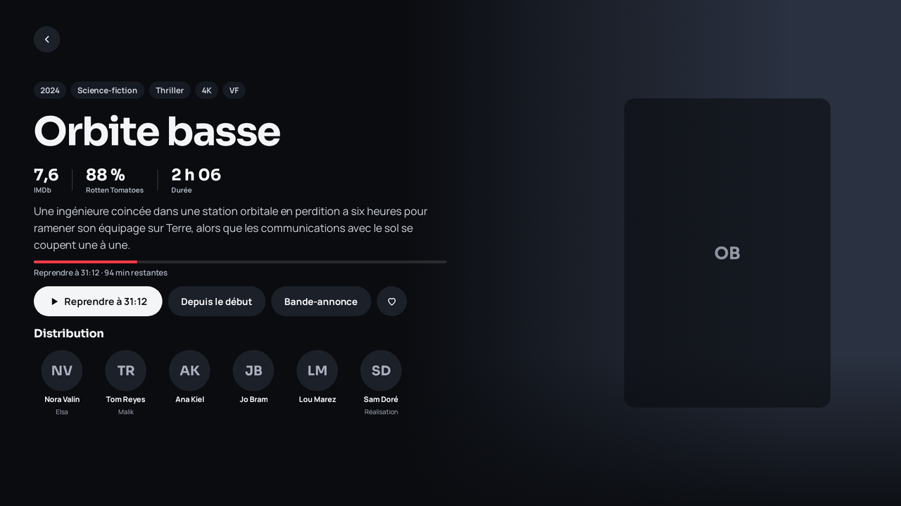
Rubrique Sport
Facultative : matchs en direct et à venir sur 48 h tirés du guide de vos sources, par discipline, avec rappels, enregistrements et écussons des équipes (TheSportsDB).
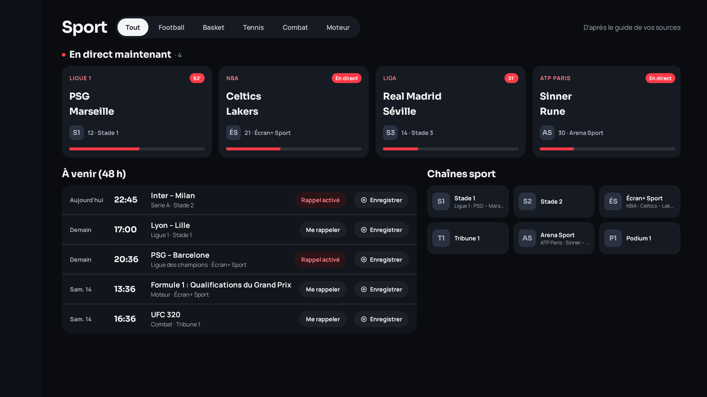
Quatre langues, dont l'arabe en miroir
Interface en français, anglais, espagnol et arabe (de droite à gauche), plus le polonais et le portugais du Brésil (premiers jets communautaires), au choix dans Réglages › Langues, indépendamment de la langue de l'appareil.

Deux moteurs de lecture
ExoPlayer (Media3) et VLC, avec repli automatique d'un moteur ou d'un décodeur à l'autre si une chaîne ne démarre pas. Tampon, qualité et décodage se règlent seuls selon la box ; tout reste modifiable.
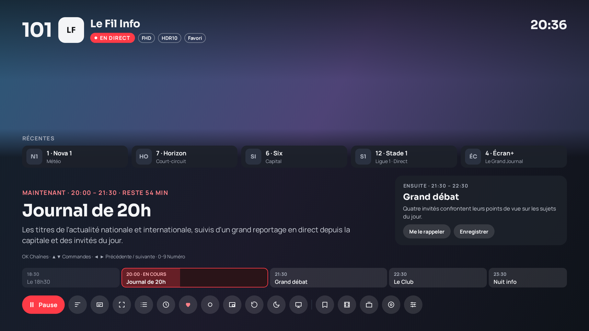
Thèmes
Sombre, clair ou automatique, redessinés en 1.2.98. Le lecteur reste toujours sombre.
Sécurité
Identifiants chiffrés sur l'appareil, aucune adresse de flux affichée, appairage au cloud par code ; un appareil révoqué perd aussitôt les sources reçues du cloud.
Veille et confort
Minuterie 30 / 60 / 90 min ou fin de programme, reprise de lecture, mise à jour intégrée.
Un seul compte, tous vos écrans
Ultra TV existe sur la TV, le smartphone, la tablette, Windows et macOS. Même interface, même fournisseur partout : ajoutez-le une fois dans le tableau de bord cloud, chaque appareil le reçoit.
Android TV et Google TV
L'application d'origine, pilotée à la télécommande : direct, guide, replay, pause du direct, deux moteurs de lecture, profils, Watch Next.
Smartphone Android
Interface tactile : barre de navigation en bas, listes et grilles au doigt, lecteur avec gestes et image dans l'image. Les formulaires se calent au-dessus du clavier.
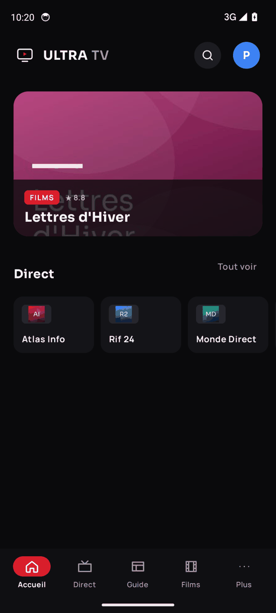
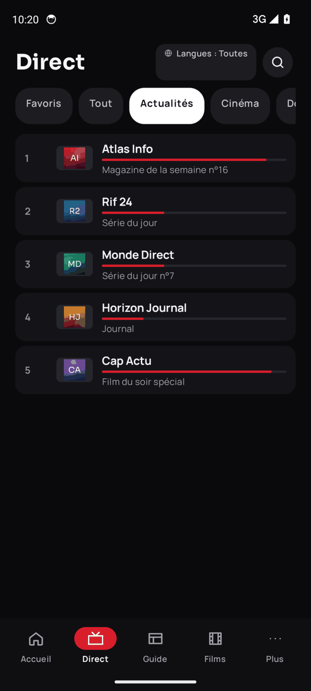
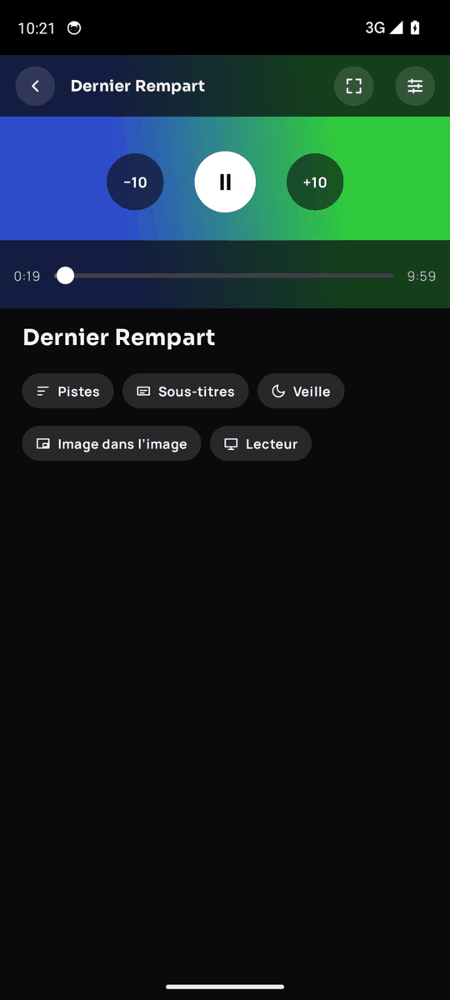
Tablette Android
Menu latéral, liste et fiche côte à côte : l'écran large est exploité, au toucher comme au clavier.
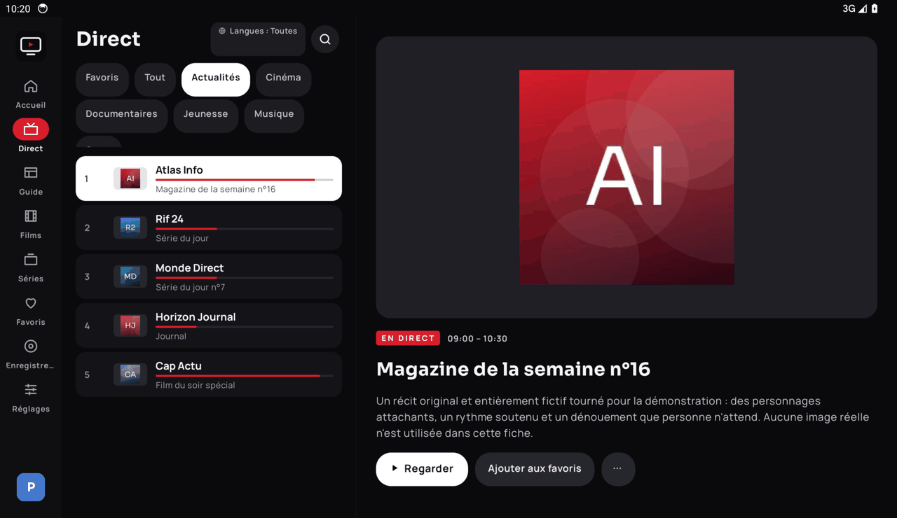
Windows et macOS
Le même design sur ordinateur : recherche sous le logo (raccourci Ctrl/Cmd + K ou /), lecture directe sans proxy, identifiants chiffrés par le trousseau du système, mise à jour automatique.
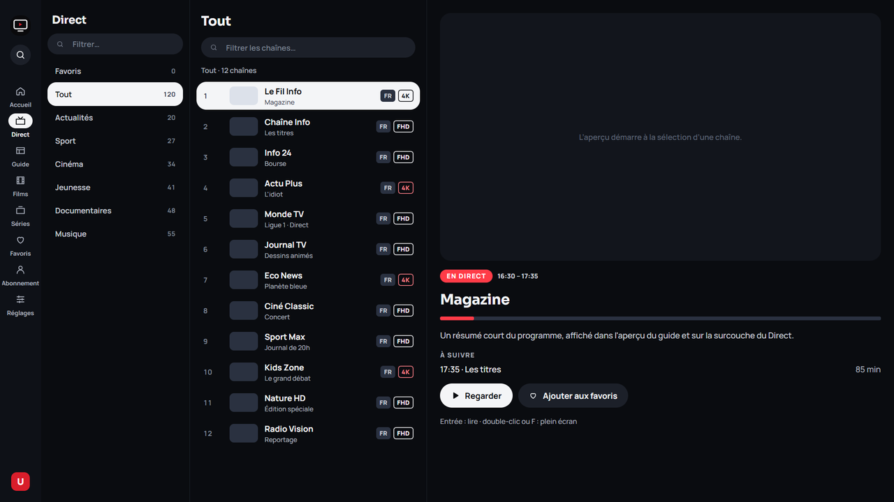
Réglages du bureau
Sources, cloud, affichage, lecture, synchronisation, langues et profils.
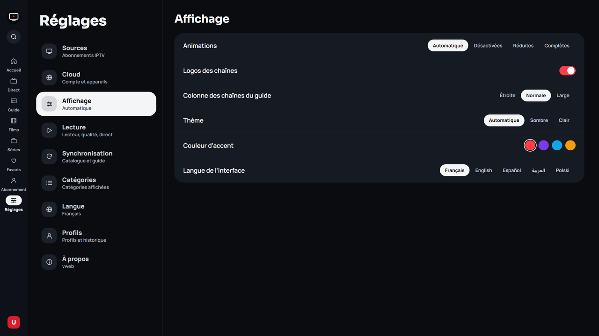
Tableau de bord cloud
Gérez vos appareils et vos sources depuis un navigateur : tv.weedy.dpdns.org. Appairez un appareil avec un code, renommez-le ou révoquez-le.
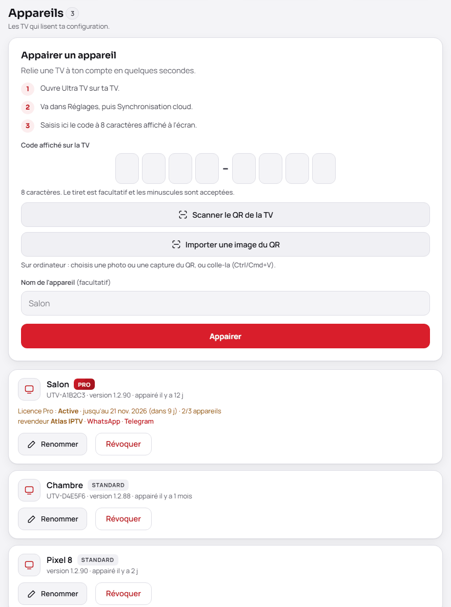
Partage des sources, appareil par appareil
Un fournisseur ajouté depuis le tableau de bord est reçu par tous les appareils. Une source ajoutée sur un appareil reste propre à cet appareil tant que vous ne la partagez pas ; le choix des appareils destinataires se fait source par source, depuis l'application ou le tableau de bord.

Télécharger
Android 1.2.0
Android 9 ou plus récent (TV, smartphone, tablette). Choisissez la version 64 bits (arm64) pour la plupart des box et téléphones récents, la version 32 bits (armv7) pour un Chromecast avec Google TV HD ou une vieille box, et l'universel si vous ne savez pas. Si l'installation échoue, prenez la version 32 bits.
| Votre appareil | APK |
|---|---|
| Fire TV Stick récent, Shield, box et téléphones 64 bits | ⬇ arm64 (recommandé)…/download/android-arm64 |
| Chromecast avec Google TV (HD), vieilles box 32 bits | ⬇ 32 bits…/download/android-32 |
| Vous ne savez pas | ⬇ Universel (dernier recours)…/download/android-universal |
Windows et macOS
Windows : installeur .exe (x64). macOS : image disque .dmg (Apple Silicon et Intel). Publiés avec les versions desktop-v… ; mise à jour automatique ensuite.
Downloader
Sur une box sans navigateur : ouvrez l'application Downloader, saisissez le code puis validez.
5189921
Installation impossible ?
- Espace libre : prévoyez au moins 500 Mo ; l'APK universel (227 Mo) en demande plus que les APK par processeur.
- Mauvais APK : sur un appareil 32 bits (Chromecast avec Google TV HD), prenez l'APK 32 bits plutôt que l'universel.
- Ancienne version signée autrement : désinstallez d'abord l'ancienne Ultra TV (Réglages › Applications), puis réinstallez.
- Téléchargement tronqué : comparez la taille du fichier à celle de la release et sa somme SHA-256 au fichier
.sha256publié ; retéléchargez en cas de différence. - Android 9 minimum.
Installer et configurer
Sur la box
- Autorisez l'installation d'applications inconnues pour Downloader (Réglages › Sécurité).
- Téléchargez l'APK avec le code ci-dessus, puis installez-le.
- Au premier lancement, choisissez le type de source (Xtream Codes, lien M3U, fichier M3U ou Depuis le cloud), saisissez-la, puis cochez vos langues : seules les catégories correspondantes sont téléchargées.
Avec adb
adb connect IP_DE_LA_BOX:5555
adb install -r UltraTV.apkSynchronisation cloud
Pour éviter de saisir des identifiants à la télécommande, gérez vos sources depuis un navigateur sur tv.weedy.dpdns.org (l'adresse est aussi affichée avec un QR code dans l'application, Réglages › Sources).
- Créez un compte sur le tableau de bord et ajoutez vos sources.
- Choisissez « Appairer une TV ».
- Sur la box : « Depuis le cloud » (assistant) ou Réglages › Sources › Synchroniser depuis le cloud. Saisissez dans le tableau de bord le code à 8 caractères affiché sur la télévision.
Vos identifiants sont chiffrés côté serveur ; la box reçoit un jeton propre, révocable depuis le tableau de bord. Vous pouvez aussi déployer votre propre Worker (instructions et secrets à définir dans le dépôt, aucune valeur publiée).
Soutenir le projet
Ultra TV est gratuit, sans publicité, et le restera. Un don aide à payer les serveurs (synchronisation cloud, guide, affiches) et le temps passé à l'améliorer. Carte bancaire ou PayPal, depuis n'importe quel pays ; aucune donnée bancaire ne passe par Ultra TV.
FAQ
Ultra TV fournit-il des chaînes ?
Non. C'est un lecteur : vous apportez votre abonnement ou vos listes, que vous avez le droit d'utiliser.
Mes identifiants sont-ils protégés ?
Ils sont chiffrés sur l'appareil, ne sont jamais affichés ni journalisés, et les adresses de flux ne s'affichent nulle part.
Quelles box sont compatibles ?
Android 9 et plus (API 28) : Google TV / Chromecast, Mecool, Fire TV via sideload, téléviseurs Android TV. Un mode économe s'active seul sur les appareils à peu de mémoire.
La chaîne ne démarre pas, que faire ?
Ultra TV essaie seul un autre décodeur puis l'autre moteur. Vous pouvez aussi choisir le moteur et le décodage dans le panneau de lecture.
Comment mettre à jour ?
L'application vérifie les nouvelles versions sur GitHub et propose l'installation.